"Технология деталей радиоэлектронных средств"
для специальности:
1-39 02 02 «Проектирование и производство программно-управляемых электронных средств».
|
Электронный ресурс по учебной дисциплине "Технология деталей радиоэлектронных средств" для специальности: 1-39 02 02 «Проектирование и производство программно-управляемых электронных средств». |
||
| Оглавление | Программа | Теория | Практика | Контроль знаний | Об авторах | ||
Министерство образования Республики
Беларусь
Белорусский
Государственный Университет Информатики и Радиоэлектроники
Кафедра
электронной техники и технологии
М. Шахлевич,
В.Ф. Холенков, Г.В. Телеш
ЛАБОРАТОРНЫЕ
РАБОТЫ
по дисциплинам
ТЕХНОЛОГИЯ ОБРАБОТКИ МАТЕРИАЛОВ,
ТЕХНОЛОГИЯ ДЕТАЛЕЙ РЭС
для студентов
специальностей
"Проектирование
и производство РЭС"
"Электронно-оптическое
апиаратостроеиие"
В 2-х частях
Часть1
Минск 2000
УДК
621.396.66 (075.8)
ББК
34.6 Я73
Ш31
Шахлевич Г.М. и др.
Лабораторные работы по дисциплинам: «Технология обработки
материалов», «Технология деталей РЭС» для студентов специальностей
«Проектирование и производство РЭС», «Электуронно-оптическое
апиаратосс'роение». В 2-х ч. Ч.1/Т. М. Шахлевич, В. Ф Холенков,
Е. В. Телеш.- Мн.: БГУИР, 2000.- 43 с: ил.14.
ISBN 985-444-134-2 (ч.1)
Лабораторные работы составлены на основе обучающе -исследовательского подхода в соответствии с типовыми программами дисциплин «Технология обработки материалов» и «Технология деталей РЭС» и предназначены для закрепления а углубления теоретических знаний студентов, получения практических навыков.
Включены
лабораторные работы по изучению методов анализа точности и настроенности
технологических процессов, технологии холодной листовой штамповки и
изготовления деталей из пластмасс прямым прессованием.
УДК 621.396.66 (075.8)
ББК 34.6 Я73
ISBN 985-444-134-2 (ч.1) © Г.М.Шахлевич и др.
ISBN 985-444-129-6 (ч.1) 2000
Содержание
ИССЛЕДОВАНИЕ ТОЧНОСТИ И НАСТРОЕННОСТИ ТЕХНОЛОГИЧЕСКИХ
ПРОЦЕССОВ ИЗГОТОВЛЕНИЯ ДЕТАЛЕЙ
ИССЛЕДОВАНИЕ ТЕХНОЛОГИЧЕСКОГО ПРОЦЕССА ИЗГОТОВЛЕНИ
ДЕТАЛЕЙ ХОЛОДНОЙ ЛИСТОВОЙ ШТАМПОВКОЙ
ИССЛЕДОВАНИЕ ТЕХНОЛОГИЧЕСКОГО ПРОЦЕССА ИЗГОТОВЛЕНИЯ
ДЕТАЛЕЙ ИЗ ПЛАСТМАСС ПРЯМЫМ ПРЕССОВАНИЕМ
ИССЛЕДОВАНИЕ
ТОЧНОСТИ И НАСТРОЕННОСТИ ТЕХНОЛОГИЧЕСКИХ ПРОЦЕССОВ ИЗГОТОВЛЕНИЯ ДЕТАЛЕЙ
Цель работы
1.Изучить методы
анализа точности изготовления деталей и настроенности технологических процессов
(ТП).
2.Овладеть навыками
проведения измерений и расчетов при исследовании точности и настроенности ТП
экспериментально-статистическим методом.
3.Исследовать
точность и настроенность ТП изготовления ЭРЭ, обработки резанием, штамповкой и
прессованием.
4.Получить навыки оформления операционной карты контроля.
Индивидуальные задания
Вариант 1
1.Производственные погрешности и причины их возникновения.
2.Методы анализа производственных погрешностей.
3.Исследовать точность и настроенность ТП изготовления
детали листовой штамповкой. Исследуемый параметр - размеры детали (В(ТУ) = мм,
ΔТУ) = %).
Вариант 2
1.Законы распределения производственных погрешностей и их
основные характеристики. Критерий Пирсона.
2.Настроенность технологических процессов.
3.Исследовать точность и настроенность ТП изготовления
детали методом прессования. Исследуемый параметр - диаметр детали (В(ТУ) = мм,
ΔТУ) = %).
Вариант 3
1.Расчетно-аналитический метод анализа точности ТП.
2.Моменты рядов распределения погрешностей, их назначение и
аналитические выражения.
3.Исследовать точность и настроенность ТП изготовления
радиоэлемента. Исследуемый параметр - сопротивление (емкость) (В(ТУ) = Ом(мкФ), ΔТУ = %).
Вариант 4
1.Экспериментально-статистический метод анализа точности и
настроенности ТП.
2.Методика построения гистограммы распределения
производственных погрешностей.
3.Исследовать точность и настроенность TTI изготовления детали резанием (точением).
Исследуемый параметр - диаметр детали (В(ТУ)=Ом(мкФ), ΔТУ = %).
1. КРАТКИЕ СВЕДЕНИЯ ИЗ ТЕОРИИ
1.1. Производственные погрешности, причины их возникновения, законы
распределения
В процессе изготовления изделий невозможно обеспечить
абсолютную тождественность их выходных параметров. При любом неизменном ТП
изготовления партии деталей одним и тем же рабочим на одном и том же
оборудовании появляются производственные погрешности, например, колебания
геометрических размеров или физических параметров изделий.
В общем случае под производственными погрешностями понимают
отступления от номинальных данных, указанных в чертежах, нормалях, ТУ и другой
технической документации, которые возникают при изготовлении деталей и сборке
изделий.
Производственные погрешности подразделяются на систематические и случайные.
Систематической называется погрешность, которая в процессе
исследований остается постоянной или же изменяется по определенному закону.
Случайная погрешность принимает различные значения под
влиянием случайных факторов, поэтому определить заранее точное ее значение не
представляется возможным.
Систематические погрешности вызываются:
методическими причинами, возникающими из-за ограниченных
возможностей выбранного метода изготовления детали или контроля ее параметров
(например, погрешность измерительного инструмента, плохая проработка
конструкции изделия и д.р.);
Деформацией и износом оборудования, оснастки и инструмента;
температурными воздействиями на деталь или сборочную
единицу, возникающими в процессе их изготовления.
Случайные производственные погрешности связаны с
неоднородностью материала заготовки (например, по твердости), погрешностью
измерений, отклонениями параметров комплектующих изделий, колебаниями
технологических режимов, субъективными данными рабочих и т.п.
Для описания производственных погрешностей изготовления
деталей РЭС используются три закона: нормальный, равновероятный и обобщенный
типа А (табл. 1.1). Нормальному закону чаще всего
подчиняется распределение погрешностей в том случае, когда производство
изделий носит массовый характер, при автоматически работающем оборудовании и
отсутствии факторов, вызывающих систематические погрешности. При равномерном
изменении во времени доминирующей систематической погрешности (например, износ
инструмента) применяют равновероятный закон распределения. Бели распределение
исследуемой совокупности погрешностей сильно отличается от нормального,
используют обобщенный закон типа А.
1.2. Методы анализа производственных
погрешностей
Определение законов распределения производственных погрешностей
производится экспериментально-статическим методом. Он основан на получении и
обработке большого количества наблюдений, характеризующих погрешности. Метод
позволяет определить суммарную технологическую погрешность, которая возникает в
результате взаимодействия ряда факторов, но не дает возможности выявить причины
ее возникновения.
Расчетно-аналитический метод основан на выявлении
функциональных зависимостей между производственными погрешностями и причинами
их возникновения. В результате сочетания этих методов появились
расчетно-статистический, корреляционный и другие методы анализа производственных
погрешностей.
1.2.1. Расчетно-аналитический метод оценки
точности технологических процессов
Все аналитические методы предполагают, что зависимость
между погрешностями и причинами, их вызывающими, известна в явном
аналитическом виде. Пусть известна функциональная связь между каким-либо
выходным (конструкторским или эксплуатационным) параметром изделия у и параметрами
q (i = 1, 2,..., n) ТП егб изготовления:
y=f(q1, q2,…, q) (1.1)
Всякие отклонения y и qi, - будут соответственно производственными
погрешностями изделия и ТП его изготовления. Предположим, что производственные
погрешности изделия - это сумма составляющих, вызываемых случайными и систематическими
погрешностями ТП. Если среди случайных погрешностей нет доминирующих, величины q взаимно независимы и функция f непрерывна (имеет производные при любых q),
то полный дифференциал dy:
(1.2)
Очевидно, что dy и dqi, будут именно производственными
погрешностями изделия и параметров ТП его изготовления. Переходя от
дифференциалов к конечным приращениям, т.е. полагая dqi≈Δqi, что допустимо при малых Δqi,
из (1.2), получим выражение абсолютной погрешности Δу:
Таблица 1.1
Характеристики
основных законов распределения производственных погрешностей
|
Закон
распределения |
График
функции |
Плотность
распределения |
Полное поле
рассеяния при вероятности 0,9973 |
Параметры
распределения |
|
Нормальный (Гаусса), Н |
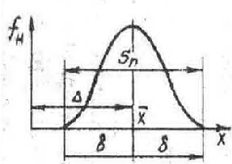 |
|
|
|
|
Равновесный, Р |
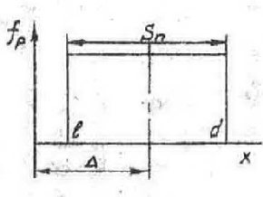 |
|
|
|
|
Обобщенный
типа А |
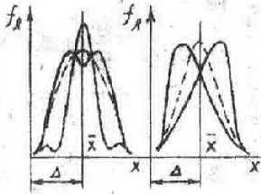 |
|
|
|
(1.3)
Разделив (1.3) на (1.1), определим относительную
погрешность изделия и Δy/y как
функцию относительных погрешностей Δq/q параметров ТП его изготовления:
(1.4)
где - весовые коэффициенты, характеризующие меру
влияния составляющих (вклад) погрешностей ТП Δq/q на выходную погрешность изделия и Δy/y.
Значения А, в линейном уравнении
погрешности выходного параметра изделия (1.4) могут быть определены как
аналитическим путем, так и экспериментально. Используя метод
частных производных получим:
(1.5)
Те же значения , можно получить экспериментально,
используя, например, метод малых приращений:
Поскольку значения погрешностей Δy/y и Δq/q представляют
собой случайные величины, то оценивают среднее значение Δy/y как математическое ожидание производственной погрешности изделия:
Если входные параметры ТП, например x и z, ,
имеют между собой корреляционную связь, то половину поля рассеяния выходного
параметра изделия δy можно выразить
где - коэффициенты относительного рассеивания параметров i, х и z . определяемые
как (ТУ); - среднее квадратическое
отклонение i-ro параметра; δi(ТУ) - половина поля допуска г-го параметра, заданного
техническими условиями, - коэффициенты корреляции взаимосвязанных параметров; - половина полей реальных отклонений; - весовые коэффициенты параметров i, x и
z. Эффективность описанного метода тем выше, чем больше
статистический материал.
Для приближенных предварительных оценок
производственных погрешностей может быть использован метод, математическую
основу которого составляет теория рядов Тейлора. Выражение (1.4) в этом случае
приобретает вид
1.2. Экспериментально-статистический метод
анализа точности и настроенности ТП
На первом этапе анализа производственных погрешностей этим
методом выбирается объект исследования, определяется объем экспериментальных
данных и назначаются средства технического контроля. Основным требованием к
объекту является однородность экспериментальных данных. Объем экспериментальных
данных определяется требуемой точностью анализа. Измерительные средства должны
выбираться так, чтобы полная погрешность измерений не превышала 10% от допуска
на изменяемый параметр.
На втором этапе производится наблюдение изучаемого
параметра, обработка данных и анализ результатов. Экспериментальные данные
отражающие закономерности ТП, заносятся в протокол испытаний. Дня удобства
вычислений их предварительно группируют в интервалы (разряды). Количество
интервалов К и их ширина С определяются по формулам:
, (1.7)
где N - число измерений; и - максимальное и минимальное значения
измеряемого параметра.
Границы интервалов определяются путем последовательного
прибавления к ширины
интервала С. Для удобства интервальный ряд записывается в форме табл. 1.2.
Ряды распределения производственных погрешностей получают
большую наглядность, если их изобразить графически, как показано на рис. 1.1, в
виде гистограмм или полигона по данным табл. 1.2. При построении гистограммы
каждый интервал представляется на оси абсцисс прямоугольником с основанием,
равным ширине интервала, и высотой, равной частости. Соединив ломаной линией
высоты, восстановленные из середины основания всех прямоугольников, получим
полигон распределения.
Для упрощения расчетов параметров законов
распределения используются начальные, центральные и основные моменты. Начальным
моментом ряда распределения h-гo
порядка относительно условного начала ао называется сумма произведений
отклонений разрядных значений ао
в степени h на соответствующую частоту:
(1.8)
(1.9)
Таблица 1.2
Статическая сводка экспериментальных данных
|
№ интервалов |
Границы интервала |
Середина интервала |
Частота |
Накопленная частота |
Частность |
|
1 |
|
|
|
|
|
|
2 |
|
|
|
|
|
|
… |
… |
… |
… |
… |
… |
|
К |
|
|
|
|
|
|
|
|
|
|
|
|
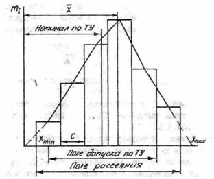
Рис. 1.1. Гистограмма и полигон распределения
статических данных
За условное начало принимают середину того интервала,
в котором частота наибольшая. Момент вычисленный
относительно среднего значения случайной величины, называется центральным:
(1.10)
(1.11)
(1.12)
Основной момент ряда распределения h-го порядка равен отношению центрального
момента этого порядка к среднему квадратичному отклонению в степени h :
(1.13)
Основные ошибки вычислительных параметров следующие:
На основании полученных данных, гистограммы и полигона
распределений делается предположение о законе, которому могут подчиняться
анализируемые величины. Поскольку между теоретической кривой и реальным распределением
неизбежно возникают расхождения, то необходимо определить, являются ли они
случайными (например, из-за малого объема наблюдений) или вызваны
несоответствием указанные совокупностей. Для этого применяют критерий согласия
Пирсона , который представляет вероятность того, что случайная
величина
(1.14)
примет значение, превосходящее некоторую величину ( и - практические и теоретические частоты
распределения производственных погрешностей).
Расчет величины приводится в табл. 1.3 в зависимости от предполагаемого закона распределения. По
найденному значению и числу
степеней свободы находится вероятность того, что превзойдет
значение . Число степеней свободы:
(1.15)
где k - число интервалов; f - число параметров закона распределения. Согласно
(1.15) для нормального распределения m=k-3; для равновероятного m=k-2 и для типа А-m=k-5.
Границей между случайным и существенным расхождением обычно
берется 5%-ный уровень значимости, т.е. при отклонения
между статистическими данными и теоретической кривой являются случайными и предполагаемый
закон распределения достоверно описывает данные измерений. В ином случае
расхождение считается существенным и необходимо подобрать другой закон
распределения.
Значения критерия согласия Пирсона находятся по известным и числу
степеней свободы m из специальных таблиц (см. например, [2]).
Таблица 1.3
Расчет критериев согласия реальных и теоретических
законов распределения (по Пирсу)
|
Н |
|
|
|
, при ; , при . |
|
|
|
|
|
|
||||
|
Р |
|
|
- |
|
|
|
||||||||
|
А |
|
|
|
|
|
|
при при |
|
|
|
||||
|
1 |
2 |
3 |
4 |
5 |
6 |
7 |
8 |
9 |
10 |
11 |
12 |
13 |
14 |
15 |
|
1 |
|
|
|
|
|
|
|
|
|
|
|
|
|
|
|
2 |
|
|
|
|
|
|
|
|
|
|
|
- |
- |
- |
|
3 |
|
|
|
|
|
|
|
|
|
|
|
|
|
|
|
4 |
|
|
|
|
|
|
|
|
|
|
|
|
|
|
|
… |
… |
… |
… |
|
|
|
|
|
|
… |
… |
… |
… |
… |
|
К |
|
|
|
|
|
|
|
|
|
|
|
|
|
|
1.3. Определение настроенности ТП
Установление закона, которому подчиняются распределения
производственных погрешностей исследуемого параметра, позволяет определить
коэффициент технологической точности изготовления изделий Тп и смещение уровня настроенности ТП
от середины поля допуска Е по
формулам:
(1.16)
(1.17)
где и - значения номинала и половины поля допуска на
изучаемый параметр изделия по техническим условиям. Технологический процесс
считается настроенным (удовлетворительным) при и . В этом
случае при подчинении распределения производственных погрешностей нормальному
закону брак не превысит 0,9%.
2. Расчет точности и настроенности ТП на
ЭВМ
Для расчетов на ЭВМ применяются следующие формулы:
1. Математическое
ожидание (среднее значение):
2. Начальный момент
2-го порядка:
3. Центральный момент 2-го порядка:
4. Среднее квадратическое отклонение:
5. Допуск на параметр:
6. Коэффициент технологической точности:
7. Смещение уровня настроенности:
Структурная схема алгоритма расчетов параметров точности и
настроенности ТП приведена на рис. 1.2.
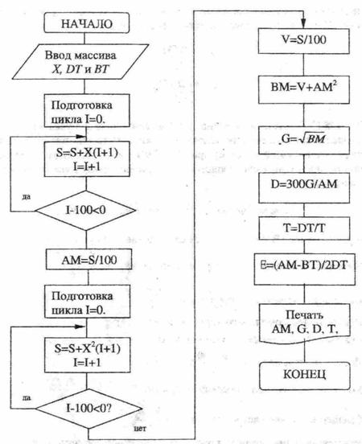
Обозначения:
Рис. 1.2. Алгоритм расчета параметров
точности и настроенности ТП
3.
Методика
выполнения работы
При выполнении работы используются следующее оборудование,
оснастка и инструмент:
пресс механический типа К2114УЧ, штампы вырубной и
гибочный;
машина для прессования пластмасс и пресс-формы;
станок токарный с резцами;
микрометр, штангенциркуль, линейка
измерительная;
мост переменного тока для измерения сопротивления, емкости
и индуктивности.
3.1. Получить у
лаборанта детали, ранее обработанные с помощью различных технологических
процессов на настроенном оборудовании при выполнении лабораторных работ по
листовой штамповке, резании, прессованию пластмасс.
3.2. В соответствии с индивидуальным заданием разработать
операцию технического контроля детали и заполнить на нее операционную карту.
3.3. Произвести
измерения заданного параметра партии деталей и результаты измерений занести в
таблицу.
3.4. По формулам (1.6) и (1.7) определить количество и
ширину интервалов.
3.5. Определить
границы интервалов, количество измеренных параметров, попавших в каждый
интервал, и заполнить табл. 1.2.
3.6. Построить
гистограмму и полигон распределений статистических данных.
3.7. Рассчитать
критерий Пирсона и определить принадлежность ряда распределения к
определенному закону.
3.8. Рассчитать
моменты статистического ряда распределений в соответствии с
табл. 1.3.
3.9. В случае, если распределение производственных погрешностей окажется
подчиняющимся нормальному закону, по формулам из табл. 1.1 рассчитать параметры
этого распределения.
3.10. Вычислить
коэффициент технологической точности и смещение уровня настроенности,
определить, настроен ли технологический процесс изготовления данной детали.
3.11. По структурной схеме алгоритма составить программу
параметров распределения производственных погрешностей, Тп и Е для ПЭВМ.
3.12. После проверки преподавателем правильности
составления программы ввести ее в ЭВМ вместе с данными ваших измерений и произвести
расчеты.
3.13. Сравнить расчеты на ПЭВМ с
произведенными вручную.
4.
Содержание отчета
4.1. Цель работы.
4.2. Индивидуальное задание.
4.3. Краткие теоретические сведения.
4.4. Таблица результатов измерений.
4.5. Расчет количества и ширины интервалов (табл. 1.2),
гистограмма и полигон распределений.
4.6. Расчет критерия
Пирсона и определение закона распределений, моментов статистического ряда и
параметров закона распределений.
4.7. Результаты расчета параметров настроенности ТП.
4.8. Программа и результаты расчетов на ПЭВМ.
4.9. Операционная карта контроля и выводы по работе.
5. Контрольные вопросы
5.1. Виды и причины возникновения производственных
погрешностей.
5.2. Законы распределения производственных
погрешностей, критерий Пирсона.
5.3. Методы анализа производственных погрешностей.
5.4. Сущность
расчетно-аналитического метода анализа производственных погрешностей.
5.5. Сущность экспериментально-статистического метода
анализа производственных погрешностей.
5.6. Методика
построения гистограммы и полигона распределений, расчет параметров закона
распределения производственных погрешностей.
5.7. Параметры настроенности технологического процесса.
Литература
1. Ушаков Н.Н.
Технология производства ЭВМ. Учебник для вузов.- М..: Высш.
шк., 1991.-416 с.
2. Серафинович Л.П. Статистическая обработка опытных данных.
Учеб. пособие.- Томск:
Изд-во ТГУ, 1990.- 75 с.
3. Технология и
автоматизация производства РЭА/ Под ред. А.П.Достанко, Ш.М.Чабдарова.- М.:
Радио и связь, 1989.- 624 с.
4. Ланин В.Л., Емельянов
В.А., Хмыль А.А. Проектирование и оптимизация
технологических процессов производства электронной аппаратуры. Учеб. пособие- Мн.. БГУИР, 1998.- 196 с.
5. Глудкин О.П., Черняев В.Н. Анализ и контроль
технологических прочее сов производства РЭА.- М.: Радио и связь, 1983.- 296 с.
ИССЛЕДОВАНИЕ
ТЕХНОЛОГИЧЕСКОГО ПРОЦЕССА ИЗГОТОВЛЕНИ ДЕТАЛЕЙ ХОЛОДНОЙ ЛИСТОВОЙ ШТАМПОВКОЙ
Цель работы
1. Изучение механизма пластической деформации металлов.
2. Ознакомление с прогрессивными методами обработки
металлов давлением - листовой холодной штамповкой.
3. Изучение
оборудования и оснастки, применяемой для листовой штамповки и методики расчета
основных параметров процесса вырубки (пробивки), гибки, вытяжки.
4. Разработка технологического процесса вырубки, пробивки и
гибки.
1.
КРАТКИЕ
СВЕДЕНИЯ ИЗ ТЕОРИИ
1.1.
Механизм
пластической деформации металлов
Пластическое изменение формы твердого тела называют
пластической деформацией. Обработка металлов давлением, одним из видов которой
является листовая штамповка, возможна благодаря пластичности металлов. Пластичностью
называются свойства твердых тел; необратимо не разрушаясь, изменять
свою форму под действием внешних сил или внутренних напряжений.
Пластическая деформация металлов представляет собой сложный
физико-механический процесс, обеспечивающий формоизменение металлической
заготовки и изменение структуры и физико-механических свойств металла.
Количественно пластическая деформация оценивается
относительным удлинением Е
(2.1)
где - длина образца после его испытания на
растяжение (мм), - длина образца до испытания (мм).
Под действием внешних сил твердое тело сначала
деформируется упруго, а затем пластически. Таким образом, пластической
деформации всегда предшествует упругая. Упругая
деформация возникает при относительно небольших значениях деформирующих сил (не
превышающих предела упругости σр) и
является следствием упругих смещений атомов металла, происходящих в результате
упругих изменений межатомных расстояний. По прекращении действия деформирующих
сил атомы возвращаются на свои места, и упругая деформация исчезает.
Пластическая деформация возникает вслед за
упругой под действием значительных сил (обязательно превышающих предел
упругости σр). Она сохраняется и после снятия нагрузки.
Однако в этом случае после разгрузки деформируемое тело несколько изменяет свои
размеры за счет частичного восстановления первоначальных размеров под
действием упругой деформации. Такое явление называется упругим последействием.
При пластическом деформировании зерна металла и их группы
дробятся, перемещаются, поворачиваются, вытягиваются и, кроме того, некоторые
части кристаллов смещаются относительно упругих. Эти смешения осуществляются
главным образом скольжением (сдвигом) и двойникованием. При скольжении одна
часть кристалла смещается параллельно относительно другой на расстояние, во
много раз большее межатомных расстояний. Скольжение происходит по определенным
кристаллографическим плоскостям, которые называются плоскостями скольжения.
Обычно ими являются плоскости, имеющие наибольшую плотность размещения
(упаковки) атомов. Например, в металлах с гранецентрированной кубической
решеткой (ГПК) плоскостями скольжения являются плоскости октаэдра типа (111).
Скольжение анизотропно. По одним кристаллографическим
плоскостям оно идет значительно легче, чем по другим. При повышении температуры
увеличивается количество возможных плоскостей скольжения.
Двойникование представляет собой смещение одной части
кристалла симметрично остальному его объему. Наибольшую склонность к двойникованию обнаруживают кристаллы с ГПУ-
и ОЦК-решетками. Оно сравнительно редко наблюдается
при статическом нагружении и значительно чаще при деформировании
ударом. С увеличением скорости деформации и понижением температуры склонность к
двойникованию повышается. Плоскости двойникования обычно совпадают с плоскостями скольжения.
Пластическая деформация происходит не только вследствие
сдвига внутри кристалла (зерна), но и в результате поворота, сдвига и
относительного перемещения самих зерен. Такая межкристаллитная (межзеренная) пластическая деформация приводит к
определенной ориентировке зерен, т.е. к появлению текстуры.
Аморфный механизм пластической деформации (диффузионная
пластичность) характеризуется отсутствием порядка в последовательности перемещения
атомов или молекул из одних мест устойчивого равновесия в другие. Он характерен
для пластической деформации пластмасс.
1.2.
Сущность
процессов и технология листовой штамповки
Листовая штамповка относится к холодной обработке
давлением. Ее применяют для изготовления плоских, а также пространственных
тонкостенных деталей из листового, ленточного полосового металла или
неметаллических материалов (клеммы, шайбы, шасси, кожухи приборов, панели и
др.).
Штампованные изделия отличаются достаточной точностью,
хорошей взаимозаменяемостью. На металлорежущих станках их обычно не
обрабатывают.
Основные преимущества листовой штамповки:
высокая производительность, экономный расход металла и
простота;
широкие возможности и относительная простота механизации и
автоматизации процесса обработки;
массовость выпуска и низкая стоимость изготовляемых
изделий.
Операции листовой холодной штамповки подразделяются на:
разделительные, при которых одна часть листа отделяется от
другой;
формообразующие, при которых
изменяется пространственная форма заготовки;
комбинированные, при которых
сочетаются разделительные и формообразующие элементы обработки;
штампосборочные, при которых
отдельные штампованные детали соединяются обработкой давлением в общую
конструкцию.
Классификация операций приведена на рис.2.1.
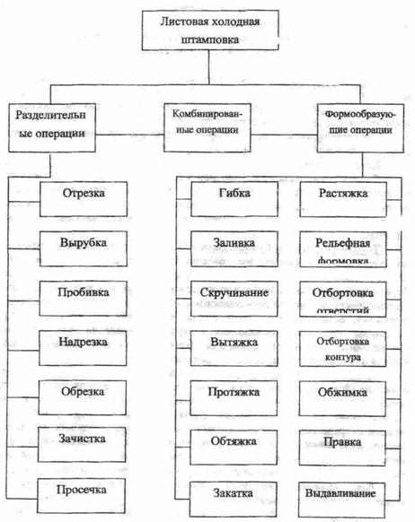
Рис. 2.1. Классификация методов листовой штамповки
Листовые материалы для холодной штамповки предварительно
разрезают на полосы или заготовки необходимых размеров. Резка полос является
заготовительной операцией и осуществляется на рычажных, гильотинных, дисковых
или вибрационных ножницах, а также на специальных отрезных штампах.
Технология листовой штамповки обычно предусматривает:
подготовку материала (очистка, смазка); изготовление заготовок (резка листов на
полосы или заготовки, резка ленты и т.п.); деформирование металла
(разделительные и формообразующие операции); термическую
обработку - отжиг для снятия наклепа после холодного деформирования, закалку
или химико-термическую обработку, если это необходимо, и т.п.; отделочные
операции - удаление заусенцев, промывку, полирование, окраску, нанесение
защитных или декоративных металлических покрытий (хромирование, никелирование и
т.п.). Иногда в технологию включаются сварочные и сборочные операции.
Для удаления заусенцев применяют пескоструйную обработку с сухим
и влажным абразивом. В последнем случае не требуется вентиляции. В качестве
абразивной среды применяются электрокорунд, бой шлифовальных кругов. Фирма
"Bosh" изготовляет
установки для удаления заусенцев у небольших деталей посредством детонации
газовой смеси и сгорания тонких заусенцев. В камеру, куда помещаются детали с
заусеницами, впрыскивается кислородно-ацетиленовая смесь и воспламеняется.
Кратковременная температура вспышки достигает 2000°С,
в ее пламени тонкие заусеницы сгорают и оплавляются.
Для удаления заусенцев применяются также химическое и
электрохимическое травление.
Перед разработкой технологии обычно выполняют технологические
испытания материала, форм и размеров изготовляемой детали (испытания на изгиб,
рез, перегиб, твердость). При разработке технологии сначала определяют формы и
размеры заготовок: для плоских деталей размеры заготовки соответствуют их форме и размерам; для гнутых
деталей формы и размеры заготовок определяют путем развертывания (условной разгибкой) детали в плоскую.
Формулы для расчета размеров заготовок приведены на
рис.2.2. При вытяжке круглых деталей в качестве заготовок обычно используют
заранее вырубаемые диски.
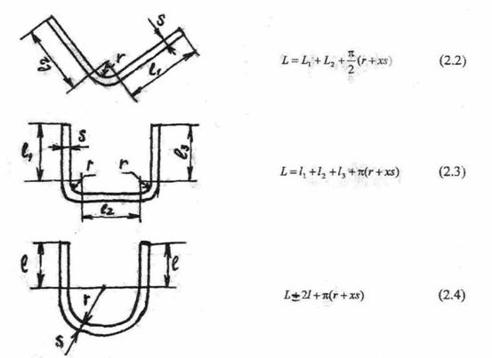
χ – коэффициент, значения которого
приведены в табл. 2.1
Рис.2.2. Расчет размеров заготовки
Таблица 2.1
Значения коэффициента χ
для расчета размера развертки
|
r/s |
χ |
r/s |
χ |
r/s |
χ |
|
0,05 |
0,27 |
0,50 |
0,38 |
2,0 |
0,45 |
|
0,10 |
0,30 |
0,60 |
0,39 |
2,5 |
0,46 |
|
0,15 |
0,32 |
0,70 |
0,4 |
3,0 |
0,47 |
|
0,20 |
0,33 |
0,80 |
0,408 |
4,0 |
0,47 |
|
0,25 |
0,35 |
1,0 |
0,42 |
5,0 |
0,48 |
|
0,30 |
0,36 |
1,2 |
0,43 |
7,0 |
0,49 |
|
0,40 |
0,37 |
1,8 |
0,45 |
10,0 |
0,50 |
Определив размеры заготовки, устанавливают раскрой
материала. Раскроем называют порядок расположения заготовок на листе,
ленте или полосе. Выбор вида и способа раскроя зависит главным образом от формы
необходимых заготовок и должен учитывать технологическую анизотропию исходного
листового проката. Раскрой может быть с отходами (рис.2.3,а-г)
и безотходный (рис.2.3,д-е), прямой (рис.2.3,а), наклонный (рис.2.3,б).
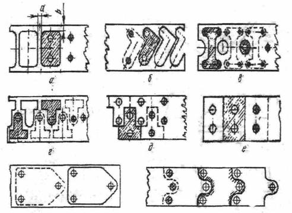
Рис.2.3. Виды раскроя полосы
Выбирают такой раскрой, который наиболее экономичен. На
рис.2.3,ж показано изменение формы детали для сокращения отходов.
Рациональность и экономичность раскроя оцениваются коэффициентом использования
материала η, который в общем случае определяется по формуле
(2.5)
где - площадь или
масса штампуемой детали, мм2; - площадь или масса заготовки, требуемой для изготовления
детали, мм2. Расстояние
между соседними деталями, а также расстояние от края полосы выбирают в
зависимости от толщины листа и механических свойств материала (табл.2.2).
Установив вид раскроя, выбирают виды штамповочных операций.
При этом руководствуются формами штампуемых деталей, их размерами, точностью
размеров, технологическими особенностями выбранных операций и т.д. Так,
например, при изготовлении вырубкой и пробивкой плоских деталей малой точности
ограничиваются только этими операциями, при изготовлении более точных деталей
назначают еще правку и зачистку. При изготовлении пространственных деталей
назначают вырубку заготовок, затем гибку и вытяжку в
один или несколько переходов или операций. После вытяжки обычно назначают
обрезку. Для точных пространственных деталей после гибки или вытяжки назначают
калибровку или чеканку для уточнения отделочных элементов формы и т.д.
Таблица 2.2
Значения перемычек при различной толщине
листа конструкционной стали
|
Операционный
эскиз |
Толщина
листа, мм |
Перемычка,
мм |
|
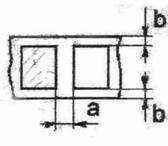 |
a и b |
|
|
0,3 |
1,4 |
|
|
0,5 |
1,0 |
|
|
1,0 |
1,2 |
|
|
1,5 |
1,4 |
|
|
2,0 |
1,6 |
|
|
2,5 |
1,8 |
Выбрав основные деформирующие операции, назначают
вспомогательные операции, например, промежуточный отжиг, травление, промывку и
т.п. В технологии обязательно предусматриваются операции промежуточного и
окончательного контроля качества изготавливаемой детали. На основе
установленных операций выбирают необходимое оборудование и применительно к нему
разрабатывают конструкции штампов.
Выбирая оборудование, в первую очередь учитывают
возможность осуществления на нем необходимых операций, производительность,
возможность механизации и автоматизации процесса обработки на этом
оборудовании, основные параметры технической характеристики, наиболее важной из
которых является усилие пресса.
Усилие штамповки (с учетом усилия, необходимого на съем
отхода или детали с пуансона и усилия на проталкивание детали или отхода через
матрицу) определяется по формуле
(2.6)
где - расчетное усилие вырубки, пробивки или
гибки.
Пресс выбирается из условия, чтобы его номинальное усилие
было равно или больше расчетного усилия ()
Усилие вырубки (пробивки) определяется по формуле
(2.7)
где k - коэффициент, учитывающий состояние режущих
кромок, неравномерность зазора между пуансоном и матрицей (k =
1,25); L - периметр вырубаемого (пробиваемого) контура, м; S - толщина материала в м; - сопротивление материала срезу, Па.
Усилие гибки определяется по
формуле
(2.8)
где - предел прочности материала, L - периметр
или длина гибки, S
-толщина детали, k -
коэффициент (k =
0,25).
Значения
сопротивления срезу и
предела прочности некоторых материалов приведены в табл.2.3.
Таблица 2.3
Сортамент и основные механические свойства
штампуемых материалов
|
Материал |
Размеры
листа, полосы, ленты, мм |
Механические
свойства |
|||
|
Сталь
тонколистовая углеродистая ГОСТ 9045-70 0,8кп; 10кп; 15кп; 20; 30; 10Г2А;
30ХГСА; 45 |
0,2;
0,25; 0,3-1,2 через 0,1; 1,4-2,2 через 0,2; 2,5; 2,8; 3,0; 3,2; 3,5; 4,0 |
1200 1400 1420 1500 1800 2000 3000 |
400,
600, 670, 710,
750, 800, 900, 1000, 1400 |
280-330 300-400 450-600 550-750 |
220-260 240-300 360-480 440-560 |
|
Лента
стальная низкоуглеродистая холодной прокатки ГОСТ 503- |
0,05;
0,06; 0,08; 0,10; 0,12; 0,15; 0,18; 0,2; 0,22; 0,25; 0,28; от 0,3 до 1,95
через 0,05; от 2 до 3,6 через 0,1 |
до 4000 |
от 4 до
20 с шагом |
350-500 420-600 |
280-400 330-480 |
|
Лента
стальная холодной прокатки конструкционная ГОСТ 19904-74 15; 20; 25; 45 |
450-800 500-850 550-600 770-1050 |
360-640 400-680 440-720 560-840 |
|||
|
Листы и
полосы латунные Л68; Л65; ЛС 59-1 ГОСТ 931-70 |
0,4-1,0
через0,1 мм; 1,5;
1,8; 2,0 |
Листы:
1500х600; 1410х710; 1000х2000; Полосы: ширина от 40 до 500 |
240-350 |
240-280 |
|
|
Ленты
латунные Л68; Л63; ЛС 59-1 ГОСТ 2208-70 |
0,05-0,10
через |
До 175
для толщины 0,05- |
300-380 |
240-300 |
|
|
Ленты
медные М1; М2; М3 ГОСТ 1173-70 |
210-300 |
170-240 |
|||
|
Листы,
полосы алюминиевые А0; А1; А2; А3; А5; А0-1; Д1; Д16
и т.п. ГОСТ 13726-68 |
0,3;
0,5; 0,6; 0,8; 1,0; 1,5; 3,0; 6,0; 10 |
2000 3000 4000 |
400;
500; 600; 800; 1000; 1200; 1400; 1500 |
70-150 |
55-120 |
|
Полосы и
ленты из бериллиевой бронзы БрБ2; БрБ2,5 ГОСТ
1789-60 |
0,05-0,1
через |
1000 2000 4000 |
Полосы:
50; 100; 300 Ленты:
10 – 200 толщина |
300-360 |
240-280 |
|
Полосы и
ленты из бронзы БрОф6,5-0,15; БрОЦ4-5 ГОСТ 1761-70 |
300-500 600-700 |
|
|||
|
Стеклотекстолит,
в т.ч. фольгированный |
|
|
|
|
120-150 |
Усилие вырубки или пробивки можно уменьшить за счет
применения пуансона или матрицы со скошенными кромками (рис.2.4) или применить
штамп со ступенчатым расположением пуансонов, при этом при вырубке применяется
штамп со скошенными режущими кромками у матрицы, при пробивке - со скошенными
кромками у пуансона. При использовании штампа со ступенчатым расположением
пуансонов усилие вырубки (пробивки) уменьшается за счет поочередной работы
пуансонов.
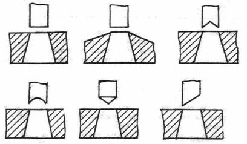
Рис. 2.4. Примеры матриц и пуансонов со
скошенными кромками
Особенностью технологического процесса штамповки деталей из
текстолита и гетинакса является то, что при толщине
заготовок из гетинакса более 1,0-
При вырубке материала с подогревом усадка размеров,
совпадающих с продольным направлением листа несколько меньше усадки размеров,
совпадающих с поперечным направлением. Поэтому при штамповке деталей
прямоугольной формы раскрой листа на полосы рекомендуется производить так,
чтобы длина и ширина детали совпадали с длиной и шириной листа, соответственно.
При вырубке (пробивке) деталей из гетинакса
и текстолита в целях повышения качества поверхности среза, предотвращения
появления среза, предотвращения появления трещин и "выпучивания"
(расслоения) материала в штампах необходимо применять сильные прижимные
устройства. При вырубке гетинакса и текстолита
применяют большую величину перемычек, чем для металла, т.к. вследствие
хрупкости этих материалов малые перемычки растрескиваются и выкрашиваются.
1.3 Оборудование и оснастка, применяемые при штамповке
Основным оборудованием для холодной штамповки являются
кривошипные гидравлические и пневматические прессы.
Кинематическая схема кривошипного пресса показана на
рис.2.5.
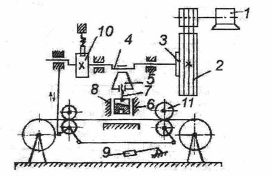
Рис.2.5. Кинематическая схема кривошипного
пресса
Он состоит из кривошипного вала 4, на один из концов
которого насажен маховик 2, свободно вращаемый на валу электродвигателем 1 при
помощи клиноременной передачи. Кривошипный вал шатуном 5 и винтом 7 соединен с
ползуном 6 пресса, двигающегося в направляющих 8. Винт 7 позволяет регулировать
положение ползуна 6, что дает возможность устанавливать на пресс штампы
различной высоты. Маховик 2 соединяется с кривошипным валом пресса муфтой 3.
включаемой нажатием педали 9. Тормоз 10 быстро останавливает
кривошипно-шатунный механизм пресса после разъединения.
Современные прессы оснащаются автоматическими устройствами
для подачи материала, удаления отходов и изделий.
Для подачи заготовки может быть использовано валковое устройство
11 или клещевые, клинковые и др. механизмы. Отдельные заготовки насыпают в
приемники-бункеры, откуда они поштучно попадают в штамп. Для удаления
отштампованных изделий и отходов применяют пружинные выбрасыватели,
механические руки (роботы), воздушное сдувание и т.д.
Оснасткой к оборудованию холодной штамповки являются
штампы.
Как видно из рис.2.6, простейший вырубной
штамп состоит из нижней 1 и верхней 2 плит, направляющих колонок 4, хвостовика
3, направляющих втулок 5, пуансонодержателя 8, сменного
пуансона 6, жесткого съемника 9, направляющих планок 10, вырубной матрицы 7 и
крепежных деталей.
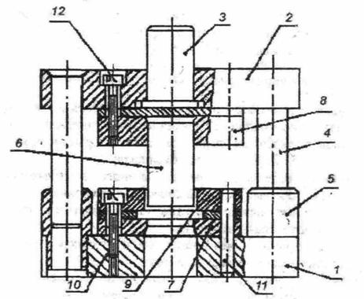
Рис 2.6. Эскиз вырубного штампа
Штампы различают по трем признакам: технологическому,
конструктивному и эксплуатационному.
По технологическому признаку штампы подразделяются по роду
выполняемых операций (отрезные, вырубные, гибочные и т.п.), по количеству одновременно
штампуемых деталей (одноместные и многоместные) и по совмещенности операций (одно-операционные,
многооперационные).
По конструктивному признаку штампы подразделяются на штампы
с направляющими устройствами и без них (открытые), упрощенные и универсальные
(переналаживаемые).
По эксплуатационному признаку штампы подразделяются по
способу подачи материала (с ручной и автоматической подачей), по способу
удаления отштампованной детали (со штамповкой на провал через отверстие в матрице, выталкиванием детали в
верхнюю часть штампа и удалением его жестким выталкиванием, со сдуванием
детали сжатым воздухом и ручным удалением).
Конструкцию штампа выбирают согласно виду производства. При
мелкосерийном производстве выбирают универсальные переналаживаемые штампы,
обеспечивающие повышенную точность штамповки, быструю переналадку, обладающие
повышенной стойкостью. В крупносерийном и массовом производстве применяют
штампы с направляющими колонками и упрощенные штампы, они надежны в
эксплуатации, удобны при установке, обладают повышенной стойкостью.
Для изготовления основных деталей штампов - пуансонов и
матриц применяются инструментальные стали У7А 48А и т.д.
или высокопрочные легированные стали марок ХВГ, Х12Ф1, Х12М (HRC 54-60), вольфрам - кобальтовые твердые
сплавы марок ВК-8, ВК-15, ВК20, ВК25, ВКЗО (HRC 85-89).
В некоторых случаях для изготовления пуансонов и матриц
вытяжных и формовочных штампов может применяться резина марок 3311, 1847, отвержденные эпоксидные смолы марок ЭД - 5, ЭД - 6, Э - 40.
1.4. Импульсные высокоскоростные виды
штамповки
В промышленности нашли применение беспрессовые
методы штамповки ввиду ограниченных возможностей механических и гидравлических
прессов:
штамповка давлением ударной волны при взрыве взрывчатых
веществ
(ВВ) в воде>или т.н. взрывная штамповка;
штамповка воздействием высоковольтного электрического
разряда в
жидкостях, или электрогидравлическая штамповка;
штамповка импульсами магнитного поля высокой напряженности
или
магнитоимпульсная штамповка.
Взрывная штамповка применяется для изготовления крупных
деталей (1,5-
В основу электрогидравлической штамповки положен
электрогидравлический эффект, открытый советским изобретателем Л.А.Юткиным в 1955 году. Энергия, необходимая для
электрического разряда, накапливается в высоковольтной конденсаторной батарее
(35-40 кВ). Накопленная энергия создает между электродами мгновенный разряд
длительностью 0,04 мкс, вызывающий ударную волну в жидкости, которая
деформирует заготовку.
Магнитоимпульсная штамповка характерна тем, что давление на
деформируемую металлическую заготовку создается непосредственным воздействием
импульсного магнитного поля без участия промежуточных твердых, жидких или
газообразных сред. Это позволяет штамповать детали из полированных и
лакированных заготовок без повреждения поверхности.
Магнитоимпульсная штамповка основана на создании в области
обрабатываемой заготовки мощного импульсного магнитного поля. Это поле индуцирует
вихревые токи противоположного направления в металлической заготовке, что
приводит к появлению электромеханических сил взаимодействия, стремящихся
оттолкнуть заготовку от магнитного индуктора. Магнитный импульс длится 10-20
мкс, создавая давление от 3500 до 39000 кгс/см2.
Движущая заготовка с большой скоростью 300-400 м/с
ударяется в матрицу, в результате чего возникают
огромные силы соударения, деформирующие заготовку.
2. Оборудование, оснастка, инструмент,
заготовки, применяемые при выполнении лабораторной работы.
1. Пресс одна/кривошипный марки К211ЧУ4.
2. Вырубные, пробивные, гибочные, комбинированные штампы.
3. Измерительный инструмент: штангенциркуль ШЦ - 1 ГОСТ
166 - 03, линейка 1 - 200 ГОСТ 427 - 75.
4. Заготовки: штампованные детали РЭС и
электронно-оптической аппаратуры.
5. Материалы: электрокартон.
3. Порядок выполнения работы
1. Получить у лаборанта или преподавателя штампованные
детали.
2. Рассчитать размеры развертки детали, используя формулы
(2-4).
3. Произвести
рациональный раскрой материала, рассчитать номинальную ширину полосы.
Определить коэффициент использования материала.
4. Рассчитать усилие
вырубки, гибки, необходимое для изготовления данной детали. По формуле (2.6)
определить усилие штамповки. Выбрать по усилию штамповки необходимое
оборудование (типы прессов их характеристики приведены на стенде).
5. Разработать
технологический процесс изготовления детали, который должен включать в себя
подготовительные, штамповочные, отделочные, контрольные и др. операции.
6. Ознакомиться с конструкцией однокривошипного
пресса. Под руководством преподавателя или лаборанта произвести процесс
штамповки детали из электрокартона.
7. Изучить конструкции штампов, имеющихся в лаборатории, ознакомится
с их особенностями.
8. Изучить стенд "Листовая штамповка в технологии
производства деталей РЭС" и правила оформления операционной карты листовой
штамповки.
4. Содержание отчета
1. Цель работы.
2. Чертеж детали.
3. Эскиз развертки детали.
4. Эскиз полосы с раскроем.
5. Расчеты размеров
детали, полосы, коэффициента использования материала, усилий вырубки, гибки
штамповки, выбор оборудования.
6. Блок-схема техпроцесса изготовления детали.
7. Выводы по работе.
5. Контрольные вопросы
1. Процесс
пластической деформации.
2. Механизмы
пластической деформации.
3. Преимущества
холодной листовой штамповки.
4. Разновидности
листовой штамповки.
5. Типы прессов для
холодной листовой штамповки.
6. Принцип работы
кривошипного пресса.
7. Виды операций,
выполняемых с помощью листовой штамповки.
8. Виды раскроя
полосы.
9. Как снизить
усилие вырубки?
10. Материалы деталей штампов.
11. Особенности штамповки металлических материалов.
12. Автоматизация и механизация процесса листовой холодной
штамповки.
13. Классификация штампов.
14. Способы удаления заусенцев.
Литература
1. Технология
деталей и периферийных устройств ЭВА: Учебн. пособие
для радиотехнических спец. вузов/М.Д. Тявловский, А.А. Хмыль, В.К. Станишевский. - Мн.: Выш. шк., 1981. - 255 с.
2. Технология
металлов и других конструкционных материалов. В.В. Архипов, А.А. Абиндер, М.А. Касенков и др. -
М.: Высш. шк., 1968.
3. Романовский В.П.
Справочник по холодной штамповке. - М:. Машиностроение, 1979 - 576 с.
4. Савровский В.С, Головня
В.Г. Конструкционные материалы и их обработка. М.: Высш.
шк., 1976.
ИССЛЕДОВАНИЕ
ТЕХНОЛОГИЧЕСКОГО ПРОЦЕССА ИЗГОТОВЛЕНИЯ ДЕТАЛЕЙ ИЗ ПЛАСТМАСС ПРЯМЫМ ПРЕССОВАНИЕМ
Цель работы
1.Изучение классификации, состава и свойств
пластмасс.
2.Изучение технологических процессов, оснастки и
оборудования для изготовления деталей из пластмасс.
3.Разработка технологического процесса прямого прессования
с заполнением операционной технологической карты.
4.Исследование влияния температуры, удельного давления,
прессования и времени выдержки под давлением на качество полученных деталей.
Индивидуальные задания
Вариант 1
1. Термореактивные пластмассы и их свойства.
2. Прямое прессование.
3. Исследовать влияние температуры прессования на качество
деталей. Пластмасса: фенопласт К-21-22 ГОСТ 5689-.79 (Т = 130, 140 150, 160,
170°С), время выдержки под давлением 1 мин, удельное давление 25 МПа,
температура предварительного нагрева 80°С.
Вариант 2
1.Термопластичные пластмассы и их свойства.
2.Литьевое прессование.
3.Исследовать влияние удельного давления на качество
деталей. Пластмасса: полиэтилен ПЭНД ГОСТ 16338-85Е (Руд = 20, 25,
30, 35 МПа, Т = 190°С), остальные параметры из вар.
1.
Вариант 3
1.Композиционные пластмассы.
2.Характеристики оборудования и оснастки для прессования
пластмасс.
3. Исследовать
влияние выдержки под давлением на качество деталей. Пластмасса: полистирол ПСМ
115 ГОСТ 20282-77Е (t =
0.5, 0.8, 1.0, 2.0 мин) Т = 180°С, остальные параметры
из вар. 1.
Вариант 4
1. Общая характеристика физико-механических свойств пластмасс.
2. Разработка и оформление техпроцесса прямого прессования.
3. Исследовать
влияние температуры предварительного подогрева на качество деталей. Пластмасса:
фенопласт К-21-22 (Тпред = 70,
80, 90, 100°С), Т = 150°С, остальные параметры из вар. 1.
1. КРАТКИЕ ТЕОРЕТИЧЕСКИЕ СВЕДЕНИЯ
1.1.
Классификация,
состав и свойства пластмасс
При изготовлении изделий конструктивной базы РЭС и
электронно-оптической аппаратуры в качестве конструкционных и радиотехнических
материалов широкое применение находят пластмассы.
Пластмассы — это неметаллические материалы, изготовленные
на основе природных или синтетических высокомолекулярных соединений, полимеров.
Природные полимеры являются веществами биологического происхождения
(канифоль, битум, шеллак, янтарь). Синтетические полимеры получаются реакциями
полимеризации или поликонденсации простых органических веществ, мономеров.
По отношению к нагреванию и растворителям пластмассы
делятся на термопластичные (термопласты) и термореактивные (реактопласты).
Такое деление находится в прямой зависимости от типа и природы полимера,
составляющего основу пластмассы. Термопласты при нагревании переходят в вязкотекучее состояние, при охлаждении затвердевают. Этот
переход можно повторять многократно, т.е. возможна вторичная переработка
материала. Термопласты растворяются в органических растворителях. Полимеры
этой группы имеют линейную или разветвленную структуру молекул. В силу низкой
термостойкости изделия из большинства термопластов могут нормально работать
при температурах не более 60-70°С. В то же время они хорошие диэлектрики,
прочны и коррозионностойки. Благодаря высокой
текучести из термопластов можно получать изделия сложной формы.
Термореактивные полимеры при нагреве до определенной
температуры расплавляются и в результате химических превращений твердеют,
переходя в нерастворимое состояние. Этот процесс является необратимым. Для
реактопластов характерна пространственная структура молекул. Большинство
полимеров этой группы обладают ценными физико-механическими свойствами. Они
являются хорошими диэлектриками, термостойки (могут эксплуатироваться при
температуре 100-110°С), не боятся агрессивных сред.
Пластмассы разделяют на простые
(однокомпонентные) и сложные (композиционные). Простые пластмассы представляют
собой чистые, чаще всего термопластичные полимеры: полиэтилен, полистирол,
винипласты, полиамидные смолы, фторопласты. Композиционные пластмассы состоят
из полимера и специальных добавок, обеспечивающих повышение жесткости,
прочности, термостойкости и других свойств. Полимеры в композиционных
пластмассах выполняют функцию связующих веществ. Ими служат главным образом
термореактивные синтетические смолы (фенолформальдегидные, эпоксидные,
кремнийорганические и др.). В качестве добавок применяются:
наполнители (органического и неорганического
происхождения), обеспечивающие требуемые физико-механические свойства. По
характеру распределения в полимере они могут быть порошковыми (кварцевая мука,
тальк, каолин, мел, известь, древесная мука и др.); волокнистыми
(стекловолокно, минеральная вата, целлюлозная масса, льняные очесы и др.) и
листовыми (бумага, асбокартон, стекло- и хлопчатобумажная ткань и др.). Содержание наполнителей
в пластмассах доходит до 40-65%;
пластификаторы, повышающие пластичность и снижающие
температуру размягчения пластмассы при формовке изделий. Это чаще всего
низкомолекулярные высококипящие жидкости (дибутилфталат,
камфара, крезилфосфат и др.);
стабилизаторы, замедляющие процесс старения и связывающие
продукты распада (стеараты кальция, свинца и бария,
углекислый свинец и др.);
красители и пигменты, придающие пластмассам необходимую окраску
(нигрозин, родамин, мумиё);
катализаторы, сокращающие время отвердения и ускоряющие
технологический процесс (известь, окись магния и др.);
смазывающие вещества, способствующие отделению готовых изделий
от металлических пресс-форм (стеарин, олеиновая кислота) и др.
1.2.
Методы
изготовления деталей из пластмасс
Основными методами изготовления деталей из пластмасс
являются прямое (компрессионное) и литьевое прессование, литье под давлением,
дутьевое и вакуумное формование. Для получения неразъемных
соединении используют сварку и склеивание. Отделку и доводку деталей, нарезание
резьбы, изготовление отверстий выполняют обработкой резанием. Для листовых
пластмасс можно применять штамповочные операции с применением прижима в зоне
обработки.
Основными технологическими свойствами пресс-материалов
являются: усадка - уменьшение
размеров детали от момента затвердевания пластмассы до ее полного остывания.
Действительная усадка Уd(%):
где Af и Ad - размеры гнезда пресс-формы при температуре
прессования и детали при комнатной температуре соответственно. Усадку
необходимо учитывать при проектировании детали, пресс-
и литьевой формы;
текучесть- способность пластмассы заполнять форму
при заданных температуре, давлении и времени выдержки в конкретных условиях прессования;
таблетируемость - способность материала подвергаться
уплотнению для уменьшения объема загрузочной камеры, упрощения дозировки и др.
Порошковые и волокнистые пресс-материалы уплотняются до твердых (не рассыпающихся)
тел в виде дисков, шариков, гранул.
При проектировании деталей из пластмасс, получаемых
методами прессования и литья, нужно учитывать следующее:
достижимая точность метода соответствует 10-12 квалитету,
шероховатость поверхности - Rz10 - RZ3,2;
стенки детали должны быть равномерными, толщиной 1-
поверхности, перпендикулярные линии разъема формы, делаются
с уклоном в 1-5 градусов;
отверстия диаметром менее
1.2.1.
Прямое
(компрессионное) прессование (рис.3.1)
Исходный материал 4 в виде порошка, гранул, таблеток,
крошки или волокнистой массы загружается в пресс-форму 2 и при повышенной
температуре сдавливается пуансоном 1, который одновременно оформляет часть
поверхности изделия.
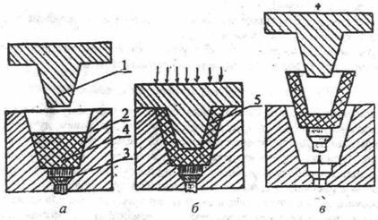
Рис.3.1. Переходы операции изготовления
деталей прямым (компрессионным) прессованием: а -дозировка
и загрузка; б - прессование;
в - извлечение детали
Нагревание материала производят перед загрузкой или
непосредственно в пpecc-форме. Давление при
прессовании зависит от текучести материала, а температура - от вида
пластмассы. После выдержки давление снимают и изделие
5 извлекают из пресс-формы при помощи выталкивателей 3. Прямое прессование
применяют для производства деталей простой конфигурации из термопластичных и
термореактивных материалов. Недостатки метода: наличие механических напряжений
в изделии из-за неравномерности температурного поля, погрешность размеров,
необходимость удаления грата и точной дозировки. Режимы обработки некоторых видов пластмасс
методом прямого прессования приведены в приложении.
1.2.2. Литьевое прессование (рис.3.2)
В отличие от прямого при литьевом
прессовании исходный материал 5 доводится до пластического состояния в
отдельной загрузочной камере 4, из которой выдавливается пуансоном 6 через литниковую систему 3, в формующую полость матрицы 2, где
выдерживается до отвердения. Удаление изделия 8 осуществляется путем разъема пресс-формы и
использования выталкивателей 1.
Преимущества литьевого прессования: возможность получения
деталей более сложной формы с однородной структурой, более высокая
производительность. не
требуется точная дозировка; а недостаток - дополнительный расход материала на
литники 7 и усложнение конструкции пресс-форм. Режимы литьевого прессования
приведены в приложении.
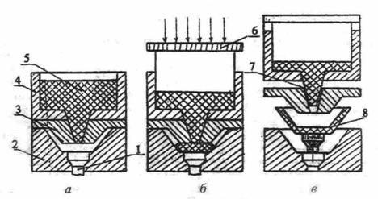
Рис.3.2. Переходы операции изготовления
деталей литьевым прессованием
1.2.2.
Литье
под давлением (рис.3.3)
Полимерный материал 1 в виде гранул или порошка загружают в
бункер 3 термопластавтомата. Дозирующее устройство 2
подает порцию, соответствующую массе отливки с литниковой
системой, в загрузочную камеру 4, когда поршень 6 находится в крайнем левом
положении. В камере материал размягчают до состояния текучести
электронагревателями 5, после чего выталкивают поршнем через сопло 9 и литниковую систему в оформляющую полость литьевой формы.
Остывая под определенным давлением, полимер приобретает конфигурацию изделия.
После этого поршень отводится в исходное положение, половина формы 8 отходит
до упора 10 и выталкиватели извлекают деталь 11 из стационарной части формы 7.
Литье под давлением является высокопроизводительным и экономичным методом. Для
него применяют механические, пневматические и гидравлические
полуавтоматические или автоматические литьевые машины, производительность
которых (16-20 тыс. изделий в смену), что в 20-40 раз выше, чем при прямом или
литьевом прессовании. Методом литья под давлением получают изделия сложной
конфигурации из термопластов.
Для получения труб, лент, различных профилей, нанесения
изоляции на провода и т.п. применяется метод экструзии, который представляет
собой непрерывное выдавливание полимерного материала в вязкотекучем
состоянии через отверстия определенного профиля. Метод дает возможность
получать изделия непрерывно, что обеспечивает высокие экономичность и
производительность.
Дутьевое и вакуумное прессование применяется для получения
деталей пространственной формы и листовых термопластов. Предварительно
нагретый до высокоэластичного состояния
пресс-материал под действием сжатого воздуха или атмосферного давления (полость
матрицы вакууммируется) вдавливается в рабочую
полость матрицы. Готовая деталь после охлаждения выталкивается сжатым воздухом.
Сварка пластмасс под давлением основана на образовании прочного соеди
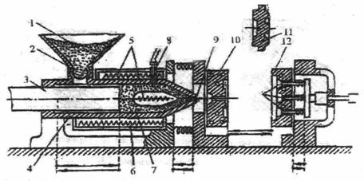
Рис.3.3. Схема изготовления деталей литьем
под давлением
Качество изделий из пластмасс зависит от свойств
перерабатываемого материала, состояния СТО и инструмента, технологических
режимов формования и др.
1.3.
Технологическая
схема операции прямого прессования
Кратко охарактеризуем основные переходы операции
прессования.
1. Подготовить
пресс-материал - т.е, его предварительно подогреть,
что сокращает основное технологическое время операции в 2-3 раза и улучшает
физико-механические свойства изделий. В зависимости от природы пресс-материала температура предварительного подогрева составляет 80-200°С. Нагрев производится в термошкафах или с помощью токов высокой частоты.
2. Подготовить
пресс-форму - т.е. очистить ее от остатков пресс-материала,
собрать ее и прогреть Очистка может производиться механически или промывкой в
растворителях.
3. Уложить арматуру в пресс-форму (если изделие
армированное).
4. Дозировать
пресс-материал - осуществляется при его загрузке в пресс-форму путем
взвешивания, объемным измерением или штучным исчислением в зависимости от
состояния пресс-материала (пресс-порошок, гранулы,
таблетки). Взвешивание является самым точным, но наиболее трудоемким способом и
применяется при дозировке несыпучих материалов.
5. Загрузить
пресс-материал - заключается в ручной ила автоматической загрузке пресс-материала в формующую полость пресс-формы.
6. Прессовать.
Основными технологическими режимами этого перехода являются температура,
давление и время выдержки, которые выбираются в зависимости от типа пластмассы
(см. таблицу). Отклонение от оптимальных режимов приводит к ухудшению свойств
изделий. Для термореактивных пластмасс часто применяется подпрессовка,
целью которой является удаление из пресс-формы газов и паров, образующихся в
ходе химических реакций.
Извлечь деталь из пресс-формы - осуществляется вручную или
автоматически с помощью специальных толкателей или применением разъемных
матриц.
Контролировать деталь — включает ее осмотр, определение
размеров, механических, электрических и др. свойств в соответствии с ТУ на
изделие.
1.4. Оборудование и оснастка операции
прессования
В качестве оборудования для операций прессования
применяются гидравлические и механические прессы как простого, так и двойного
действия, обеспечивающие удельное давление прессования порядка 60-80 МПа.
Оснасткой операции прессования являются пресс-формы,
которые по способу установки на столе пресса делятся на
съемные и стационарные. Съемные пресс-формы обслуживаются вручную и применяются
в единичном и мелкосерийном производстве. Стационарные пресс-формы,
закрепляющиеся на верхней и нижней плитах пресса,
оборудованы нагревателями, механизмами автоматической загрузки и выталкивания,
применяются при крупносерийном и массовом производстве.
На рис.3.4 представлена конструкция многоместной
пресс-формы с горизонтальной плоскостью разъема. Пуансонодержатель
закрепляется на верхней плите пресса, а нижняя часть с матрицами крепится к
столу пресса. Правильное взаимное расположение пуансонов и матриц производится
центрированием направляющих колонок по втулкам.
Все детали пресс-формы по выполняемым функциям делят на две
группы: формующие и вспомогательные. К группе формующих относят: матрицы,
пуансоны, вкладыши, гладкие и резьбовые формующие стержни. Рабочие поверхности
формующих деталей подвергаются нагреву и абразивному износу, поэтому для их
изготовления применяют высокопрочные легированные стали
типа ХГ, ХВГ, 5ХНМ, Х12М. Матрицы могут быть как цельными, так и разъемными.
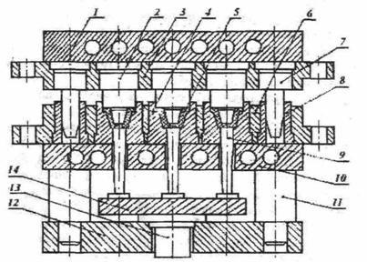
Рис. 3.4. Конструкция стационарной
многоместной пресс-формы с горизонтальной плоскостью разъема: 1 - верхняя
плита обогрева; 2 - пуансоны; 3 - пуансонодержате-ли;
4 - матрицы; 5 - детали; 6 - матрицедержатель; 7 -
направляющие колонки; 8 - втулки направляющих колонок; 9 - выталкиватели; 10 -
нижняя плита обогрева; 11 - опорные колонки; 12 - основание пресс-формы; 13,14
- детали выталкивающего устройства
По конструкции загрузочной камеры, пресс-формы делятся на
открытые, за крытые и комбинированные (рис.3,5а,б,в
соответственно).
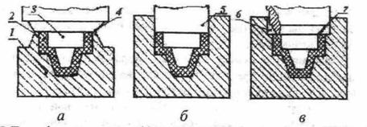
Рис.3.5. Пресс-формы открытого (а),
закрытого (б) и комбинированного (в) типов: 1- матрица; 2 - деталь; 3 -
пуансон; 4 - плоскость замыкания: 5 - замыкающая поверхность; 6 - место для
выхода избытка пресс-материала
При работе с открытыми пресс-формами не нужна точная
дозировка пресс-материала, так как при плоском
замыкании имеется возможность его выхода из рабочей полости, пресс-формы
закрытого типа требуют точной дозировки и обычно применяются для формовки
деталей из реактопластов. В комбинированных пресс-формах, занимающих
промежуточное положение, между боковыми поверхностями загрузочной камеры и
пуансона имеется зазор для выхода излишнего материала. Они несложны в
изготовлении и долговечны. При проектировании пресс-форм расчет размеров
оформляющих поверхностей деталей производят с учетом коэффициента усадки
материала изделия.
Для нагрева пресс-форм используют перегретый пар, горячую
воду, газ, электрический ток. токи
высокой частоты.
2. Оборудование, оснастка, инструмент и
материалы, применяемые при выполнении лабораторной работы
1. Лабораторный макет.
2. Система силоизмерительная ЦТМ-5.
3. Прибор для измерения твердости ТК-2.
4. Маятниковый копер МК-15.
5. Микроскоп МИС-11.
6. Штангенциркуль ЩЦ-Ш-125-01 ГОСТ 166-73.
7. Весы технические ТЧ.
8. Пресс-материалы: фенопласт
К-21-22, полиэтилен, полистирол.
2.
Порядок
выполнения работы
Для выполнения работы (см. лабораторный макет на рис.3.6)
необходимо:
1. Отвинтив гайки 2,
разобрать макет: отделить плиту 3 с винтом 1 и поршнем 4, снять цилиндр
литьевой 6 с нагревателем 7 и пресс-форму 5.
2. Проверить поршень и цилиндр литьевой на наличие остатков
пластмассы от предыдущей отливки. При необходимости произвести зачистку.
3. Проверить на отсутствие грата в пресс-форме и
правильность сборки. Установить пресс-форму на подогреватель 8.
4. В зависимости от
задания засыпать в литьевой цилиндр 25-30 гранул полиэтилена или 60-65 гранул
полистирола.
5. Выдвинув при
помощи винта поршень таким образом, чтобы его можно было вставить на 2-
6. Гайки 2 зажимаются до упора, а винт 1 вворачивается так,
чтобы поршень находился в литьевом цилиндре с небольшим давлением. Этим
достигается уплотнение гранул, что исключает образование воздушных пузырей.
7. Включаются
тумблеры " Сеть" и «Подогрев литьевой формы», тумблер нагревателя
литьевого цилиндра ставится в положение "I" (соответствует максимальной
скорости нагрева).
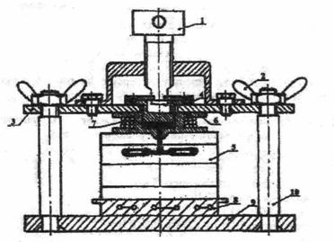
Рис.3.6. Схема лабораторного макета
8. Выдерживается
время 5-10 мин. Термопарой через каждые 30 с контролируется температура
литьевого цилиндра (180°С для полиэтилена и 190-200°С
для полистирола), формы и нижнего нагревателя. При контроле температуры литьевого
цилиндра термопара помещается между креплением ручки и его корпусом.
9. После достижения
необходимой температуры и выдержки 1-2 мин при меньшей скорости нагрева
литьевого цилиндра (тумблер скорости нагрева в положении "П") со
скоростью 1 оборот в секунду завинчивается винт 1 без остановок до упора
(предварительно убедиться в совмещении поршня с литьевым цилиндром), создавая
давление в литьевом цилиндре. Давление контролируется по положению рычага
вращения винта относительно шкалы. Нормальное давление при положении рычага на
первой риске. Если упругий элемент рычага изогнулся до второй риски, то поршень
или уперся в край цилиндра или не расплавилась пластмасса, забито литьевое
отверстие и т.д.
10. Дать выдержку давления 1-2 минуты, ф затем при помощи винта 1 поднять поршень в верхнее положение.
11. После охлаждения литьевой формы до 70°С произвести разработке макета и извлечь деталь.
12. Контролировать деталь.
4. Содержание отчета
1. Цель работы.
2. Индивидуальное задание.
3. Краткие теоретические сведения.
4. Схема исследуемого техпроцесса.
5. Характеристика применяемого оборудования, оснастки,
инструмента и материалов.
6. Экспериментальные данные и их обработка.
7. Анализ полученных результатов и выводы по работе.
5. Контрольные вопросы
1. Общая характеристика физико-механических свойств пластмасс.
2. Термопластичные пластмассы и их свойства.
3. Термореактивные пластмассы и их свойства.
4. Композиционные пластмассы и их свойства.
5. Технологический процесс прямого прессования.
7. Технологический процесс литьевого прессования.
8. Литье под давлением.
9. Характеристика оборудования, применяемого доя
прессования пластмасс.
10. Характеристика оснастки для прессования пластмасс.
11. Технологические режимы прессования пластмасс.
12. Разработка и оформление технологических процессов
прессования.
Литература
1. Гуль В.В., Агутин М.С. Основы переработки пластмасс- М.: Химия,
1985.-327 с.
2. Технология
конструкционных материалов. Учебник для вузов/ Под
ред. А.М.Дальского.- М.: Машиностроение, 1985.- 448 с.
3. Ачкасов Н.А., Терган B.C. Технология точного приборостроения.- М.: Машиностроение,
1981.-351 с.
4. Яковлев А.Д.
Технология изготовления изделий из пластмасс- М.: Машиностроение. 1986.-284 с.
Таблица
Режимы прессования пластмасс
|
Пластмасса |
Метод
прессования |
Предварит. нагрев |
Температура
прессования, °С |
Удельное
давление, МПа |
Выдержка
на 1мм толщины, мин |
|
|
Т-ра,
°С |
Время,
мин |
|||||
|
Фенопласты: К-15;
К-18-2 К-21-26;
К-211-3 Волокниты
У1-У5 |
Прямое -«- -«- |
170-190 80-100 170-190 |
3-6 10-20 170-190 |
175-185 145-165 155-185 |
20-30 25-30 20-30 |
0,3-0,5 0,6-0,8 0,5-0,7 |
|
Аминопласты: КФА;
КМФ; МФБ; МВФ; АГ-4 и др. |
-«- |
120-130 |
5-7 |
145-160 |
45-70 |
0,8-1,0 |
|
Фторопласт-4 Ф-40С15М1,5 Фторопласт-3 Винипласт
УП-10 |
Спекание Прямое -«- Литьевое |
-- 200-220 200 -- |
-- 3-4 2-3 -- |
360-380 290-300 260-280 120-180 |
30-50 40-60 30-50 до 10 |
-- 0,8-1,2 1,0-1,5 -- |
|
Полистирол
ПСМ; ПСЭ; ПСП |
-«- |
-- |
-- |
160-230 |
18-20 |
охлажден |
|
Фенопласты |
-«- |
-- |
-- |
155-185 |
25-35 |
в форме |
|
Аминопласты |
-«- |
-- |
-- |
до 175 |
30-75 |
-«- |
|
Полиэтилен ПЭНД ПЭВД Полиамид
610 |
Литье под давлением -«-- -«- |
-- -- -- |
-- -- -- |
180-280 180-230 220-270 |
7-14 10-15 12-18 |
-«- -«- -«- |
| (С) БГУИР |